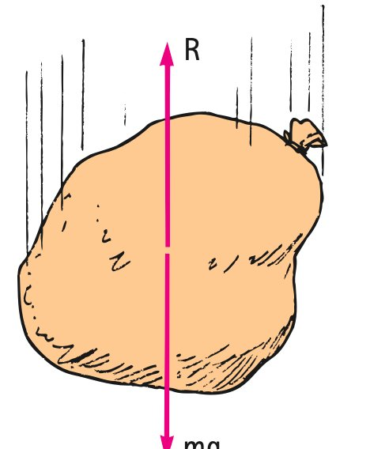

4.6 When Acceleration Is Less Than g—Nonfree Fall
Objects falling in a vacuum are one thing, but what about the practical cases of objects falling in air? Although a feather and a coin will fall equally fast in a vacuum, they fall quite differently in air. How do Newton’s laws apply to objects falling in air? The answer is that Newton’s laws apply for all objects, whether freely falling or falling in the presence of resistive forces. The accelerations, however, are quite different for the two cases. The important thing to keep in mind is the idea of net force. In a vacuum or in cases in which air resistance can be ignored, the net force is due only to gravity. In the presence of air resistance, however, the net force is less than the force due to gravity because of the opposite force arising from air resistance.4
The force of air drag experienced by a falling object depends on two things. First, it depends on the frontal area of the falling object—that is, on the amount of air the object must plow through as it falls. Second, it depends on the speed of the falling object; the greater the speed, the greater the number of air molecules an object encounters per second and the greater the force of molecular impact. Air drag depends on the size and the speed of a falling object.

In some cases, air drag greatly affects falling; in other cases, it doesn’t. Air drag is important for a falling feather. Because a feather has so much area for an object so lightly pulled by gravity, it doesn’t have to fall very fast before the upward-acting air resistance cancels the downward-acting force of gravity. The net force on the feather is then zero and acceleration terminates. When acceleration terminates, we say that the object has reached its terminal speed. If we are concerned with direction, down for falling objects, we say that the object has reached its terminal velocity.
The same idea applies to all objects falling in air. Consider skydiving. As a falling skydiver gains speed, air drag may finally build up until it equals the gravitational force on the skydiver. If and when this happens, the net force becomes zero and the skydiver no longer accelerates; she has reached her terminal velocity. For a feather, the terminal velocity is a few centimeters per second, whereas, for a skydiver, it is about 200 kilometers per hour. A skydiver may vary this speed by varying position. Head or feet first is a way of encountering less air and thus less air drag and attaining maximum terminal velocity. A lower terminal velocity is attained by spreading oneself out like a flying squirrel.
Terminal velocities are very much lower if the skydiver wears a wingsuit, shown in the opening photo at the beginning of this chapter. The wingsuit not only increases the frontal area of the diver but also provides a lift similar to that achieved by flying squirrels when they fashion their bodies into “wings.” This new and exhilarating sport, wingsuit flying, goes beyond what flying squirrels can accomplish—a wingsuit flyer can achieve horizontal speeds greater than 160 km/h (100 mph). Looking more like flying bullets than flying squirrels, these “bird people” use their high-performance wingsuits to glide with remarkable precision. To land safely, parachutes are deployed. At least one wingsuit flyer has landed safely without deploying a parachute.

The large frontal area provided by a parachute produces low terminal speeds for safe landings. To understand the physics of a parachute, consider a man and woman parachuting together from the same altitude (Figure 4.15). Suppose that the man is twice as heavy as the woman and that their same-sized parachutes are initially opened. Having parachutes of the same size means that, at equal speeds, the air resistance is the same on both of them. Who reaches the ground first: the heavy man or the lighter woman? The answer is that the person who falls faster gets to the ground first—that is, the person with the greater terminal speed. At first we might think that, because the parachutes are the same, the terminal speeds for each would be the same and, therefore, that both would reach the ground at the same time. This doesn’t happen, however, because air drag depends on speed. Greater speed means greater force of air impact. The woman will reach her terminal speed when the air drag against her parachute equals the force of gravity pulling her downward. When this occurs, the air drag against the parachute of the man will not yet have reached this balance. He must fall faster than she does for the air drag to match the greater force of gravity on him.5 Terminal velocity is greater for the heavier person, with the result that the heavier person reaches the ground first.
Consider a pair of tennis balls, one a regular hollow ball and the other filled with iron pellets. Although they are the same size, the iron-filled ball is considerably heavier than the regular ball. If you hold them above your head and drop them simultaneously, you’ll see that they strike the ground at about the same time. But, if you drop them from a greater height—say, from the top of a building—you’ll note that the heavier ball strikes the ground first. Why? In the first case, the balls do not gain much speed in their short fall. The air drag they encounter is small compared with the force of gravity on them, even for the regular ball. The tiny difference in their arrival times is not noticed. But, when they are dropped from a greater height, the greater speeds of fall are met with greater air resistance. At any given speed, each ball encounters the same air resistance because each has the same size. This same air resistance may be a lot compared with the smaller force of gravity on the lighter ball, but only a little compared with the gravitational force of the heavier ball (like the parachutists in Figure 4.15). For example, 1 N of air drag acting on a 2-N object will reduce its acceleration by half, but 1 N of air drag on a 200-N object will only slightly diminish its acceleration. So, even with equal air resistances, the accelerations of each are different. There is a lesson to be learned here. Whenever you consider the acceleration of something, use the equation of Newton’s second law to guide your thinking: The acceleration is equal to the ratio of the net force to the mass. For the falling tennis balls, the net force on the hollow ball is appreciably reduced as air drag builds up, while the net force on the iron-filled ball is only slightly reduced. Acceleration decreases as net force decreases, which, in turn, decreases as air drag increases. If and when the air drag builds up to equal the gravitational force of the falling object, the net force becomes zero and acceleration terminates.
Figure 4.16 was omitted because no matching captured image was supplied.
Footnotes
4 In mathematical notation, a = Fnet/m = (mg - R)/m, where mg is the force due to gravity and R is the air resistance. Note that when R = mg, a = 0; then, with no acceleration, the object falls at constant velocity. With elementary algebra we can go another step and get a = Fnet/m = (mg - R)/m = g - R/m. We see that the acceleration a will always be less than g if air resistance R impedes falling. Only when R = 0 does a = g.
5 The terminal speed for the twice-as-heavy man will be about 41% greater than the woman’s terminal speed, because the retarding force of air resistance is proportional to speed squared. Hence air drag becomes more important for fast-moving things like racing cars and airplanes.